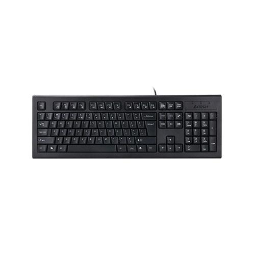

KEYBOARD
INFORMATION
A computer keyboard is a peripheral input device modeled after the typewriter keyboard which uses an arrangement of buttons or keys to act as mechanical levers or electronic switches.
Back button